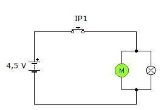
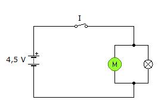
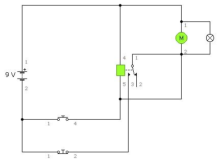

Solución en el supuesto 1:
Como la condición de funcionamiento es que la marcha y el paro se realicen a través del mismo mecanismo de control, se nos pueden plantear dos posibles alternativas.
Alternativa A: se podría optar por un pulsador de presión, como el del esquema que hemos dibujado a la derecha.
El funcionamiento de este circuito es muy sencillo. El mecanismo IP1 es un pulsador de presión de los denominados normalmente abiertos, es decir, en estado de reposo funcionaría como un circuito abierto, mientras que al pulsarlo funcionaría como cerrado. Es decir, al pulsar IP1 el circuito se cerraría, con lo que el paralelo formado por M (el motor) y L (la bombilla) entraría en funcionamiento.
Lógicamente, con este circuito se tendría una limitación: cuando se suelte el pulsador, éste volvería a su posición de abierto, cortando el paso de corriente, y provocando que la lámpara se apague y el motor se pare.
Alternativa B. En el circuito anterior, bastaría con sustituir el pulsador IP1 por un interruptor ON-OFF. El circuito quedaría entonces como se indica a la derecha.
Al accionar el interruptor I, se cierra el circuito, y funcionan la lámpara y el motor. Estos elementos estarán funcionando en tanto en cuanto el interruptor I esté cerrado. Cuando se abra el circuito, se cortará el flujo de corriente, con lo que la lámpara se apagará y el motor se parará.
Solución en el supuesto 2:
Con la primera condición de funcionamiento que se nos impone en este supuesto se nos plantea la necesidad de recurrir a un relé de enganche para conseguir con ello que, activándose el circuito con un simple pulsador (como indica la condición 1), éste permanezca funcionando, aún soltando el pulsador.
Además, tendrá que existir otro mecanismo (condición 3) que nos pare el funcionamiento de la máquina.
Un esquema podría ser el que he incluido en la figura de la drecha.
El funcionamiento quedaría así:
Cuando se pulsa IP2, la corriente circula hasta la bobina del relé, a través de IP2. Lógicamente, al pasar a través del relé, éste se activará, y sus contactos pasarán de la posición de reposo (12) a la posición de trabajo (13). En ese momento, la lámpara se encenderá, y el motor de la ruleta comenzará a girar (ambos están montados en paralelo).
Como se puede observar, a través de IP1 se va a producir una circulación de corriente paralela al camino IP2, que va a servir para activar también el relé.
Por tanto, cuando IP2 se suelte, aunque la corriente ya no pueda circular hasta el relé a través de IP2, sí llegará a él a través de IP1. Es decir, el relé permanecerá activado, ¡precisamente lo que pretendíamos!
El circuito estaría funcionando indefinidamente. Por ello es por lo que se ha colocado el interruptor IP1.
Al accionar este pulsador, que normalmente está cerrado, se producirá el corte de la corriente que llega a la bobina del relé, por lo que éste pasaría nuevamente a la posición de reposo (12).
Además de producirse el corte del relé se produce la parada del motor, y el apagón de la bombilla, porque además de abrir el mecanismo de alimentación de éstos, al pasar el relé de la posición 13 a la 12 el contacto resultante no serviría para ponen en tensión la bombilla y el motor.
De las tres propuestas planteadas, para la realización del proyecto voy a escoger la primera por comodidad.